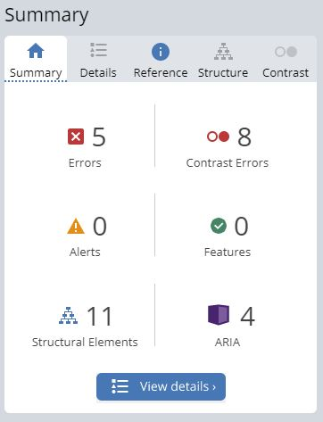
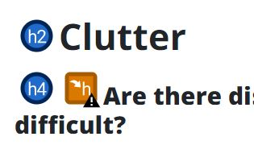

Introduction
In an effort to bring accessible practices into reality, I have made it a project to evaluate the accessibility of my User Science Journal and implement accessibility features in response to this analysis.
Methodology
I am using the Web Accessibility Evaluation Tool (WAVE) and Lighthouse to scan and generate a score for the accessibility level of my site. Based on these results I will then tweak the HTML and CSS markup with assistive standards on every page of the site.
 WAVE resultsResults
After using both WAVE and Lighthouse, I was able to narrow down the main problems I saw:
- Contrast issues with the grey text on white background
- Social media icons have no alt text or links
- Performance has room for improvement (41 with Chrome Extensions enabled, 88 without)
Implementation
The main tasks that I decided were of immediate concern:
- Darken color of text with "post-meta" CSS class
- Remove "text-muted" of copyright text
- Get rid of icons with no links and add titles for screen reader
- alt text to all images
Challenges
The main challenge I faced was making sure I was targeting the right areas that would lead to the best result. Improving performance was also a step up in difficulty in the sense of knowing exactly which aspects of CSS or JS to alter to boost the performance. I may need specialized tools for it as it's a bit beyond my skill level. On the bright side, I was able to bump "Accessibility" up to 100, from 92 on Lighthouse, and run into zero errors using WAVE.
 I made sure to take care of minor "Alerts" as wellBootstrap and Accessibility
It is debatable whether Bootstrap really has a negative influence on accessibility. From what I can tell, Bootstrap is a great tool for efficiently building HTML and CSS based websites that are responsive. As a result it is a positive for building websites where visual coherence and clarity is a concern for the viewer. If there is any significant barrier to accessibility with Bootstrap, it might be the performance hit that can happen as a result of unnecessary style sheets. Apart from this, I can see Bootstrap being used effectively alongside assistive technologies.